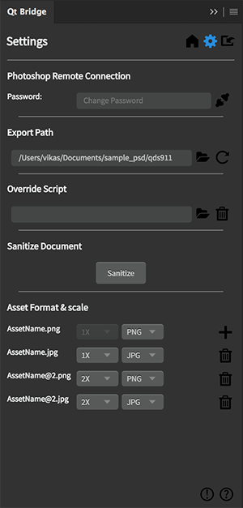

Setting Up Qt Bridge for Adobe Photoshop
Qt Bridge for Adobe Photoshop is included in the Qt Design Studio Enterprise license. You can use Qt Online Installer to have the Qt Bridge for Adobe Photoshop plugin package copied to the following path in your Qt installation folder:
- On Windows:
Tools\QtDesignStudio\photoshop_bridge - On macOS:
QtDesignStudio/photoshop_bridge.
Qt Bridge for Adobe Photoshop is delivered as an Adobe extension (ZXP) package and requires Adobe Photoshop version 20.0.0, or later to be installed. The Qt Bridge for Adobe Photoshop installation process differs depending on whether you are installing on Windows or macOS.
Installing on Windows
To install Qt Bridge for Adobe Photoshop on Windows:
- Copy the Qt Bridge for Adobe Photoshop ZXP package from
Qt\Tools\QtDesignStudio\photoshop_bridgeto theDocumentsdirectory in your user directory. Thefile-nameshould look similar to:qt.QtBridge. - Open Windows PowerShell.
- Enter the following commands, replacing
<bridge-installation-file-name>with thefile-name:cd "$env:UserProfile\Documents" mv .\<bridge-installation-file-name>.zxp .\<bridge-installation-file-name>.zip expand-archive .\<bridge-installation-file-name>.zip xcopy /E /I .\<bridge-installation-file-name> "$env:APPDATA\Adobe\CEP\extensions\<bridge-installation-file-name>"
Installing on macOS
To install Qt Bridge for Adobe Photoshop on macOS:
- Copy the Qt Bridge for Adobe Photoshop ZXP package from
Qt/QtDesignStudio/photoshop_bridgeto yourDocumentsdirectory. Thefile-nameshould look similar to:qt.QtBridge. - Open Terminal.
- Enter the following commands, replacing
<bridge-installation-file-name>with thefile-name:cd ~/Documents unzip <bridge-installation-file-name>.zxp -d <bridge-installation-file-name> sudo mkdir -p /Library/Application\ Support/Adobe/CEP/extensions sudo cp -R ./<bridge-installation-file-name> /Library/Application\ Support/Adobe/CEP/extensions
Note: On macOS Qt Bridge for Adobe Photoshop fails to load when Adobe Photoshop runs natively on an ARM processor (Apple silicon). For more information, see Running Qt Bridge for Adobe Photoshop on Apple Silicon.
Enabling Remote Connections
To set up Qt Bridge for Adobe Photoshop:
- Once the installation is completed, restart Adobe Photoshop to make Qt Bridge for Adobe Photoshop appear in Window > Extensions (Legacy).
- Select Edit > Preferences > General > Plug-ins to enable a remote connection.
- Select the Enable Remote Connections check box and enter a password in the Password field.
- To test that the connection is working properly, start Qt Bridge for Adobe Photoshop and select the settings icon in the top right corner.

- In the Password field, enter the password you entered in Adobe Photoshop and select Connect.
- In the Export Path group, select the folder button to specify the location where Qt Bridge for Adobe Photoshop copies the exported files.
- In the Asset format & scale group, select the default asset format (JPG, PNG, or SVG) and DPI to use for each layer.
Once the connection is successfully created, Qt Bridge for Adobe Photoshop is ready to use.
Running Qt Bridge for Adobe Photoshop on Apple Silicon
If you are using macOS on an ARM processor (Apple silicon), Qt Bridge for Adobe Photoshop may not be listed in Adobe Photoshop under Window > Extensions (Legacy). Run the Adobe Photoshop app in the Rosetta emulation mode. Right click the Adobe Photoshop.app and select Get info > Open using Rosetta. Once the app is running in the Rosetta emulation mode, make sure Preferences > Plug-ins > Legacy Extensions is selected.